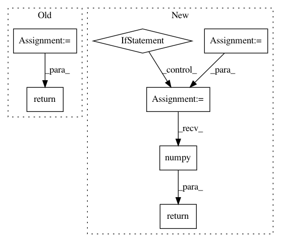

5a126fc7cac272dfe2514554ef228001c795d729,slm_lab/agent/algorithm/sac.py,SoftActorCritic,act,#SoftActorCritic#Any#,85
Before Change
if self.body.env.clock.frame < self.training_start_step:
return policy_util.random(state, self, self.body).cpu().squeeze().numpy()
else:
action = super().act(state)
return np.tanh(action) // continuous action bound
def calc_q(self, state, action, net=None):
"""Forward-pass to calculate the predicted state-action-value from q1_net."""
After Change
return policy_util.random(state, self, self.body).cpu().squeeze().numpy()
else:
action = self.action_policy(state, self, self.body)
if self.body.is_discrete:
// discrete output is RelaxedOneHotCategorical, need to sample to int. clamp to prevent minor precision issue with prob < 0
action = torch.distributions.Categorical(probs=action.clamp(min=0)).sample()
else:
action = torch.tanh(action) // continuous action bound
return action.cpu().squeeze().numpy()
def calc_q(self, state, action, net=None):
"""Forward-pass to calculate the predicted state-action-value from q1_net."""
x = torch.cat((state, action), dim=-1)
In pattern: SUPERPATTERN
Frequency: 3
Non-data size: 7
Instances
Project Name: kengz/SLM-Lab
Commit Name: 5a126fc7cac272dfe2514554ef228001c795d729
Time: 2019-08-03
Author: kengzwl@gmail.com
File Name: slm_lab/agent/algorithm/sac.py
Class Name: SoftActorCritic
Method Name: act
Project Name: eriklindernoren/PyTorch-YOLOv3
Commit Name: 8af5800b9a74cf7b2c8d2577b7d9be3ef987f26b
Time: 2021-04-09
Author: florian@flova.de
File Name: detect.py
Class Name:
Method Name: detect_image
Project Name: interactiveaudiolab/nussl
Commit Name: 2ffbfa3a6bd3b8de8e21a762489346054dcd9ccc
Time: 2020-03-12
Author: prem@u.northwestern.edu
File Name: nussl/separation/deep/deep_mask_estimation.py
Class Name: DeepMaskEstimation
Method Name: extract_features